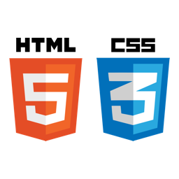

Je suis capable de maquetter une application web et mobile, de concevoir une interface utilisateur claire et épurée.

De déployer des sites web modernes et dynamique grace à javaScript pour ameliorer l'experience utilisateur de mes applications.

Ou encore administrer une base de données et réaliser des sites web dynamiques, en traitant de manière sécurisée les informations en provenance de formulaires grâce au langage php.